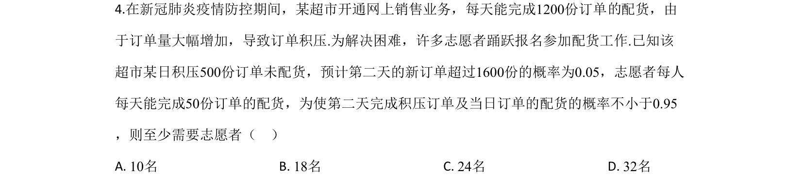
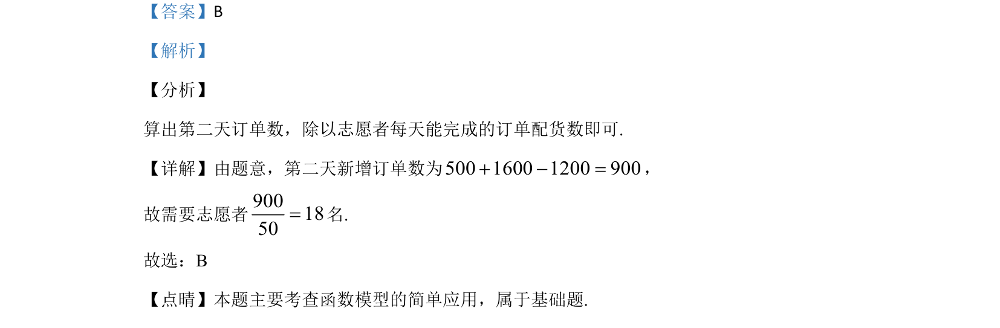

考点：概率应用 概率估计 不等式

超市积压订单，已知新订单超过1600份的概率为0.05，志愿者每人每天完成50份，求保证完成概率不小于0.95所需最少志愿者人数。

📄 原 PDF 第 3 页：
素材/真题/吉林/2008-2024·（吉林）数学高考真题/2020年高考数学试卷（文）（新课标Ⅱ）（解析卷）.pdf
4.在新冠肺炎疫情防控期间，某超市开通网上销售业务，每天能完成1200份订单 配货，由 于订单量大幅增加，导致订单积压.为解决困难，许多志愿者踊跃报名参加配货工作.已知该 超市某日积压500份订单未配货，预计第二天的新订单超过1600份的概率为0.05，志愿者每人 每天能完成50份订单的配货，为使第二天完成积压订单及当日订单的配货的概率不小于0.95 ，则至少需要志愿者（ ） A. 10名 B. 18名 C. 24名 D. 32名
【答案】B 【解析】 【分析】 算出第二天订单数，除以志愿者每天能完成的订单配货数即可. 【详解】由题意，第二天新增订单数为500 1600 1200 900+ - =， 故需要志愿者9001850=名. 故选：B 【点晴】本题主要考查函数模型的简单应用，属于基础题.